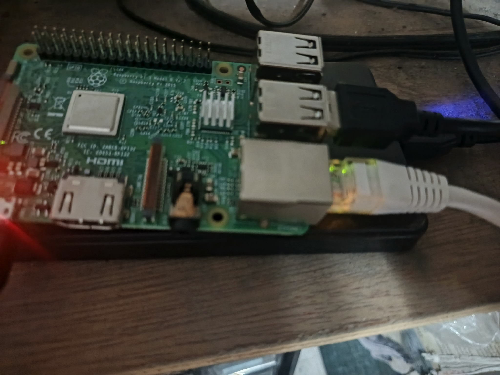
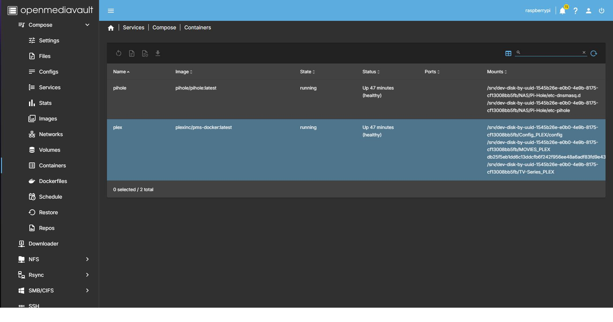
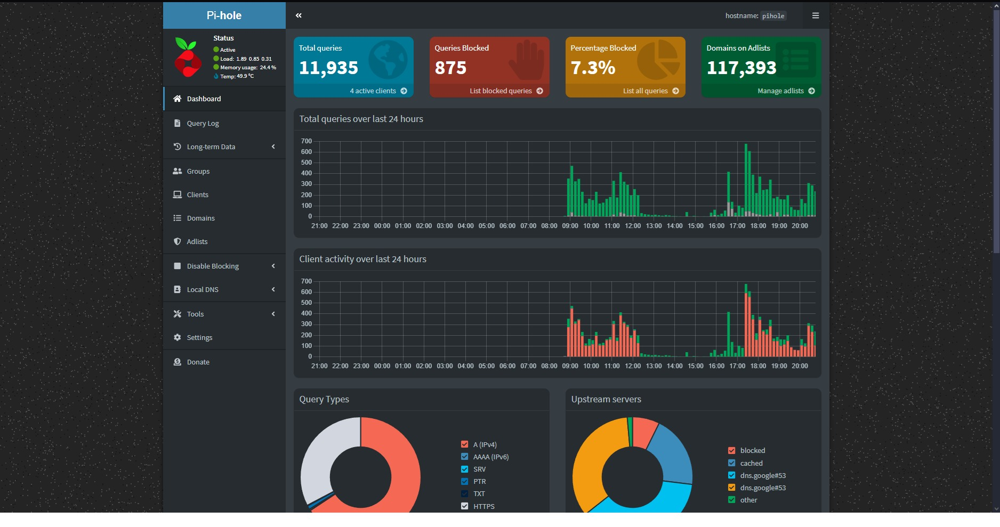
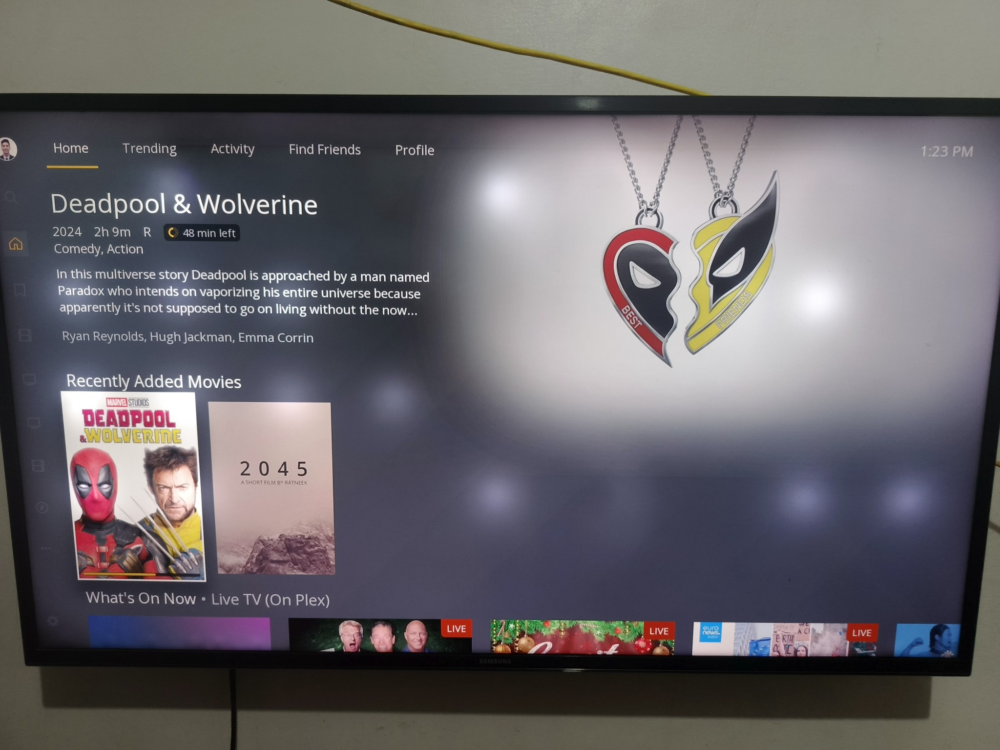
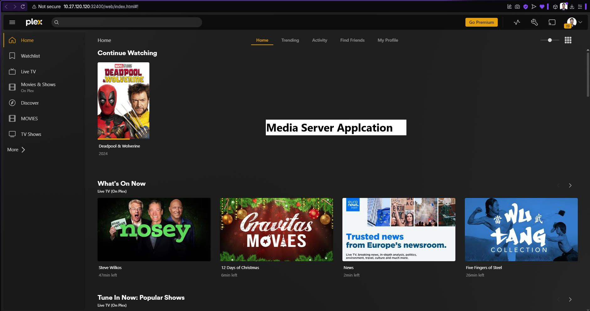

Basic Containerization Using Raspberry Pi 3 with OpenMediaVault
A spare Raspberry Pi 3 turned into a multi-service home server with OpenMediaVault, Docker Compose, Pi-hole and Plex.
Overview
I've got a spare Raspberry Pi 3, and it's incredible how much this tiny, credit-card-sized computer can accomplish in a home lab. With the help of OMV (OpenMediaVault), a Debian-based Linux OS designed for storage and server applications, I've turned this humble board into a powerful multi-service server.
OpenMediaVault (OMV) is a free, open-source NAS (Network Attached Storage) operating system that makes it easy to manage file storage on a server, a Raspberry Pi or an old PC. It gives you a web-based GUI to manage storage, users, sharing protocols (like SMB, NFS and FTP), and services like Docker and rsync, without needing deep Linux knowledge.
The hardware

The containers
I installed these containers using Docker Compose.

Pi-hole
Pi-hole is a network-wide ad blocker that you can run on a local device like a Raspberry Pi, a Docker container, or even a virtual machine. It works as a DNS sinkhole, blocking requests to advertising and tracking domains for all devices on your network.

Plex Media Server
Plex Media Server is personal media server software that organizes your video, music and photo collections and streams them to your devices (TVs, phones, computers and tablets) anywhere, over your network or the internet.

